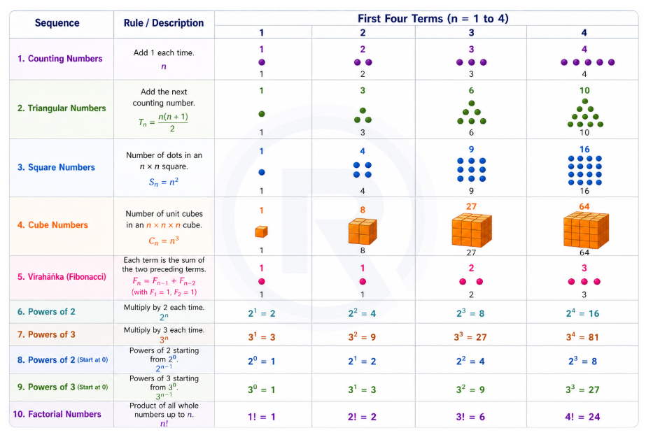

Part 5: Patterns in Mathematics
Section A: What Mathematics Is, and Number Sequences
1. Big Picture Overview
What Mathematics Is, and Number Sequences
This section asks a question that most mathematics courses never ask: What is mathematics, actually?
The answer it offers is both surprising and liberating: mathematics is, at its core, the search for patterns - and for the reasons why those patterns exist.
This reframes everything. Mathematics is not a collection of rules to follow. It is an inquiry - a search for structure in the world. Numbers, shapes, music, nature, and technology all contain hidden patterns, and mathematics is the discipline that finds and explains them.
This section begins with the most basic kind of pattern: sequences of numbers. These are lists of numbers that follow a rule - and your task is not just to continue the list, but to understand why the rule works and how sequences relate to each other.
This is where mathematical thinking truly begins.
Mathematics is not just computation. It is pattern-seeking, explanation-seeking, and structure-seeking. Number sequences give you the first clear place to practise that way of thinking.
2. Core Concepts
Concept 1 — What Is Mathematics? (The Conceptual Foundation)
a. Intuitive Explanation
Think about the last time you noticed a pattern - stripes on a zebra, tiles on a floor, the way a plant's leaves spiral outward. Patterns are not just decorative. They carry information. They arise because something is generating them - a rule, a force, a structure.
Mathematics is the discipline that identifies these generating rules and explains why they produce the patterns they do.
b. Formal Idea
Mathematics is the search for patterns and for the explanations of why those patterns exist.
This is important: finding a pattern is only half the work. The explanation - the why - is equally important, and often more powerful. Explanations allow patterns to be extended, applied, and used in entirely different contexts.
c. Deep Explanation
Why does the explanation matter as much as the pattern itself?
Consider a simple example: you notice that every even number can be divided by 2. You could memorise this as a fact. But if you understand why - because an even number is defined as a number that is formed by counting in pairs, and pairs always divide into two equal groups - then you can extend this reasoning. You can apply it in new situations, verify it without memorising examples, and use it to build further ideas.
Patterns + Explanations = Mathematical Understanding.
The section also emphasises that this kind of thinking has practical power. Understanding patterns in planetary motion led to the theory of gravity. Understanding patterns in DNA sequences has led to medical breakthroughs. The pattern itself is the beginning; the explanation is what drives progress.
d. Misconception
Misconception: "In mathematics, you find the answer and you're done. Asking 'why' is philosophy, not math."
Why it is incorrect: In serious mathematics, the proof - the explanation of why something is true - is the actual mathematical work. A pattern observed without an explanation is a conjecture, not a proven result.
Concept 2 — Number Sequences
a. Intuitive Explanation
A sequence is a list of numbers arranged in a specific order, where each number is there for a reason - it follows from a rule. Your job when studying sequences is to find the rule.
But there is a deeper skill here: not just finding rules, but seeing relationships between sequences. This is where mathematics becomes genuinely beautiful.
b. Formal Idea
A number sequence is an ordered list of numbers that follows a specific pattern or rule.
Some fundamental sequences you will study include:
- All 1's: 1, 1, 1, 1, ... (the rule: every term is 1)
- Counting numbers: 1, 2, 3, 4, 5, ... (the rule: add 1 each time)
- Odd numbers: 1, 3, 5, 7, 9, ... (the rule: add 2 each time, starting from 1)
- Even numbers: 2, 4, 6, 8, 10, ... (the rule: add 2 each time, starting from 2)
- Triangular numbers: 1, 3, 6, 10, 15, 21, ... (the rule: add increasing counting numbers - add 1, then 2, then 3, and so on)
- Squares: 1, 4, 9, 16, 25, 36, ... (the rule: each term is a counting number multiplied by itself)
- Cubes: 1, 8, 27, 64, 125, ... (the rule: each term is a counting number multiplied by itself twice)
- Virahānka numbers: 1, 2, 3, 5, 8, 13, 21, ... (the rule: each term is the sum of the two terms before it)
- Powers of 2: 1, 2, 4, 8, 16, 32, ... (the rule: each term is doubled)
- Powers of 3: 1, 3, 9, 27, 81, ... (the rule: each term is tripled)
c. Deep Explanation
Why are these called "triangular" numbers?
The nth triangular number is exactly the count of dots needed to form a solid triangle with n dots on each side. For example, a triangle with 4 dots on each side contains 1 + 2 + 3 + 4 = 10 dots. The visual geometry explains the name.
Why are these called "square" numbers?
The nth square number is the count of dots in an n x n square grid. 16 dots fill a 4 x 4 grid perfectly. The geometry of a square directly defines this sequence.
Why are these called "cubes"?
The nth cube number is the count of unit cubes in an n x n x n three-dimensional cube. 8 unit cubes fill a 2 x 2 x 2 cube; 27 fill a 3 x 3 x 3 cube. The three-dimensionality is embedded in the name.
What makes Virahānka numbers special?
The Virahānka sequence (known in the West as the Fibonacci sequence) is generated by a recursive rule: each term is the sum of the two immediately preceding terms. This sequence appears remarkably often in nature - in the spiral arrangements of sunflower seeds, the branching of trees, and the proportions of shells. Its appearance in nature is not a coincidence - it reflects how biological growth processes often work.
Powers of 2 and 3:
These sequences grow by multiplication rather than addition. They grow much faster than additive sequences. Doubling (powers of 2) appears in computer science, biology (cell division), and financial calculations. The rapid growth of these sequences is why they capture attention in science and technology.

d. Common Misconceptions
Misconception: "There is always just one rule that generates any sequence."
Why it is nuanced: Some sequences can be described by more than one rule. Square numbers, for instance, can be described as "n multiplied by itself" - but they also arise from "the sum of odd numbers starting from 1" (which you will discover in the next concept). Different rules can produce the same sequence, and this multiplicity is actually a sign of deep mathematical richness.
Misconception: "The Virahānka sequence is just about adding - it's not as 'mathematical' as multiplication-based sequences."
Why it is incorrect: The Virahānka sequence has properties that connect to geometry, nature, algebra, and even irrational numbers. Its rule is simple, but its consequences are profound. Do not judge a sequence's depth by the simplicity of its generating rule.
Misconception: "Powers of 2 and 'even numbers' are the same sequence because both are related to 2."
Why it is incorrect: Even numbers grow by adding 2 (2, 4, 6, 8, ...) - constant addition. Powers of 2 grow by multiplying by 2 (1, 2, 4, 8, 16, ...) - constant multiplication. These produce entirely different sequences that diverge rapidly.
Concept 3 — Visualising Number Sequences
a. Intuitive Explanation
Numbers are abstract - they live in the mind. But when you can see a number sequence as a picture, the pattern becomes tangible, and the rule often becomes obvious without any calculation.
Visualisation is not just a learning aid. For mathematicians, a well-chosen picture can be a complete and rigorous explanation.
b. Formal Idea
Many number sequences can be represented by arrangements of dots or physical objects, where the shape of the arrangement encodes the rule of the sequence.
c. Deep Explanation
Consider triangular numbers. When you draw dots in a triangular arrangement - 1 dot, then a row of 2, then a row of 3, and so on - you can immediately see why the next triangular number is always the previous one plus the next counting number. The picture shows the rule.
For square numbers, arranging dots in a perfect square grid makes it visually clear why the nth term is n x n.
For cubes, a three-dimensional arrangement of unit cubes makes the rule tangible - though this is harder to draw.
The most powerful use of visualisation is in explaining relationships between sequences - which is the subject of the next concept. A picture can sometimes explain a relationship so clearly that no words or algebra are needed at all.
d. Misconception
Misconception: "Drawing pictures is for students who can't do the algebra. Real mathematics is symbolic."
Why it is incorrect: Visual proofs are entirely rigorous in mathematics. Some of the deepest results in mathematics have purely visual proofs. Visualisation develops spatial reasoning, which is a distinct and valuable form of mathematical intelligence.
Concept 4 — Relations Among Number Sequences
a. Intuitive Explanation
Here is a striking observation: start adding odd numbers together, beginning from 1.
Just 1: the total is 1
1 + 3: the total is 4
1 + 3 + 5: the total is 9
1 + 3 + 5 + 7: the total is 16
These totals - 1, 4, 9, 16 - are the square numbers. Is this a coincidence? No. And the explanation turns out to be beautiful.
b. Formal Idea
Relationship 1: The sum of the first n odd numbers equals the nth square number.
(1 = 1², 1+3 = 2², 1+3+5 = 3², and so on.)
Relationship 2: Adding counting numbers up and then back down (1; 1+2+1; 1+2+3+2+1; ...) also produces square numbers.
(1 = 1², 1+2+1 = 4 = 2², 1+2+3+2+1 = 9 = 3², and so on.)
c. Deep Explanation
Why do odd numbers add up to squares?
Picture a square grid of dots. Now try to partition those dots into L-shaped brackets, starting from the top-left corner. The first bracket has 1 dot. The second L-shape has 3 dots. The third L-shape has 5 dots. The fourth L-shape has 7 dots. Each L-shape adds the next odd number.
This visual partition shows exactly why the sum of the first n odd numbers is always a perfect square: because each odd number is precisely the L-shaped "shell" that expands a square by one layer in two directions.
This is a proof by picture - a complete, rigorous explanation that requires no algebra.
Why does this matter beyond a clever trick?
Because it reveals that odd numbers and square numbers - which seem like separate sequences - are secretly connected through this additive structure. The two sequences are not independent; they are two faces of the same underlying geometry.
The "adding up and down" relationship:
1 + 2 + 3 + 2 + 1 = 9. Picture a diamond-shaped arrangement of dots: one dot at the top, two in the next row, three at the widest point, then decreasing back down. This diamond is equivalent to a square grid rotated 45 degrees - and so it contains n² dots for the nth term.
d. Common Misconceptions
Misconception: "These are just numerical coincidences - there's no reason sequences should be related."
Why it is incorrect: The relationships between sequences arise from the underlying structure of numbers and geometry. They are not coincidences; they are consequences of deep mathematical truths. Every such relationship has an explanation.
Misconception: "Once I see the pattern in numbers (1, 4, 9, 16, ...), I don't need the picture."
Why it is partially incorrect: The picture explains why the pattern holds for all cases - not just the ones you checked. Without the picture (or some equivalent explanation), you have observed a pattern but not understood it. The explanation is what gives you certainty that it continues forever.
e. Conceptual Connections
The relationship between odd numbers and squares is a preview of algebraic thinking: the idea that two apparently different expressions can describe the same quantity, and that this equivalence is explained by structure, not coincidence.
It also connects to the Virahānka sequence: when you add pairs of consecutive triangular numbers, you get square numbers (1+3=4, 3+6=9, 6+10=16, ...). Again, squares appear - this time from a different direction entirely.
3. Important Distinctions
| Sequence | Generated by | Visual shape |
|---|---|---|
| Counting numbers | Add 1 each time | Rows of dots |
| Odd numbers | Add 2, starting from 1 | L-shaped shells of dots |
| Even numbers | Add 2, starting from 2 | 2-column dot arrays |
| Triangular numbers | Add successive counting numbers | Triangular dot arrangements |
| Square numbers | Multiply a number by itself | Square dot grids |
| Cube numbers | Multiply by itself twice | Cubic arrangements |
| Virahānka numbers | Sum of two previous terms | No simple geometric form |
| Powers of 2 | Multiply by 2 | Dimensional growth (line → square → cube) |
4. Concept Checkpoints
- Without computing, can you determine what the sum of the first 50 odd numbers is? What is the reasoning that lets you answer this without any calculation?
- The Virahānka sequence uses the rule: each term = sum of previous two terms. Can you invent a sequence with the rule: each term = sum of previous three terms? What sequence would you start with?
- You are told that 36 is both a triangular number and a square number. Can you see a picture in your mind that shows both arrangements of 36 dots? What does this tell you about the relationship between the triangular and square sequences?
- Powers of 2 grow by multiplying each time. Counting numbers grow by adding. Which grows faster, and by how much? At what point does the powers-of-2 sequence overtake a sequence that adds 100 each time?
5. Chapter-Level Mental Model
Number sequences are not lists to memorise. They are structures to understand.
Each sequence embodies a rule. That rule often has a geometric interpretation. And different sequences are connected by relationships that can be seen and explained visually.
The key insight this section builds is that mathematics is about finding structure, and structure can be seen as well as calculated. The most powerful mathematical explanations are often those that make a truth visible - so clear that it needs no further argument.
End of Part 5: Continue to Part 6: Patterns in Mathematics - Shape Sequences and Deeper Relationships
▶ Shape Sequences